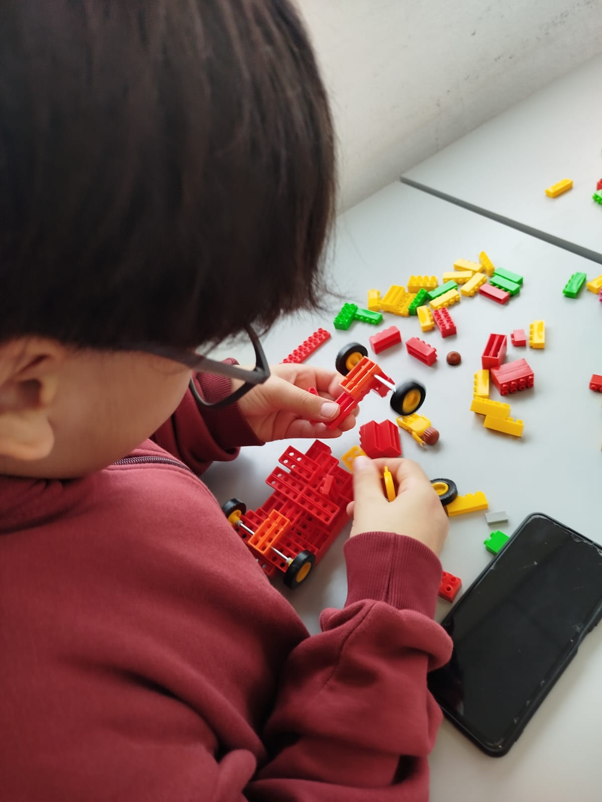
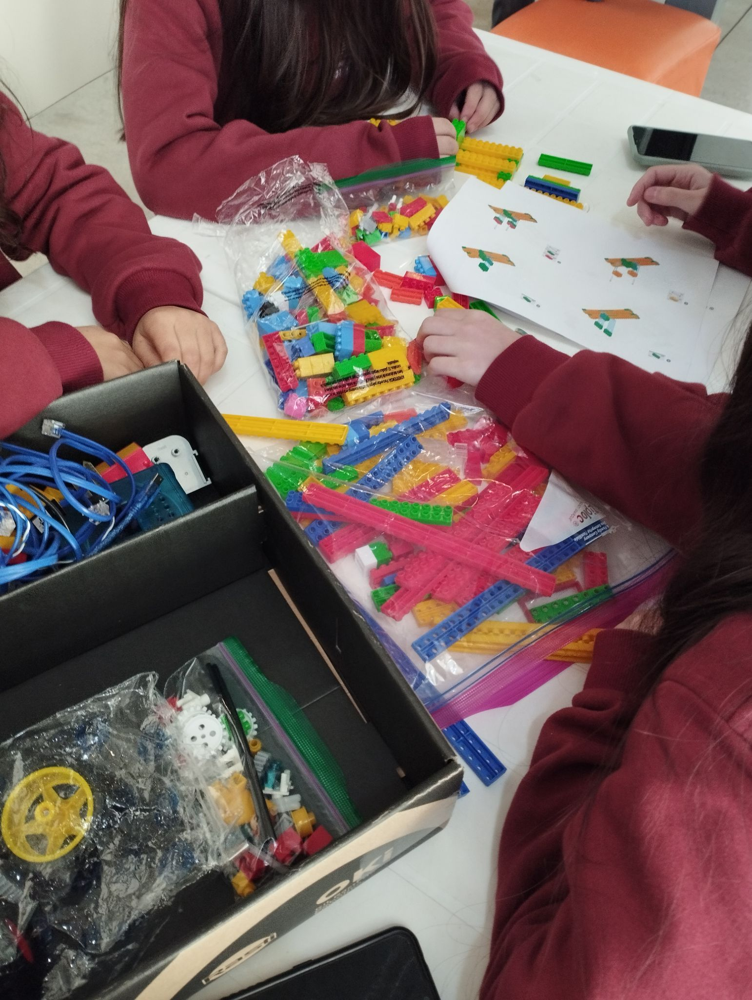
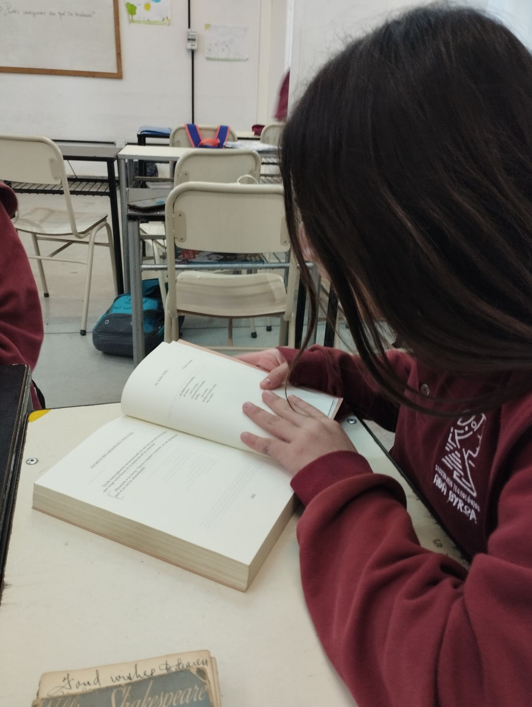
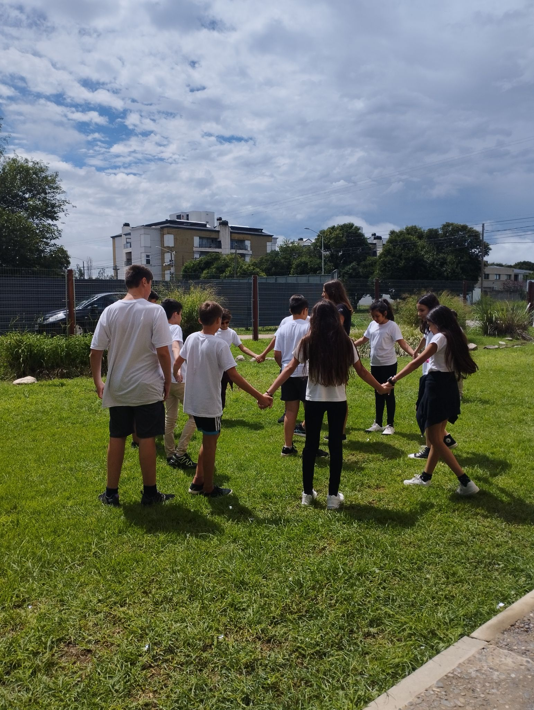
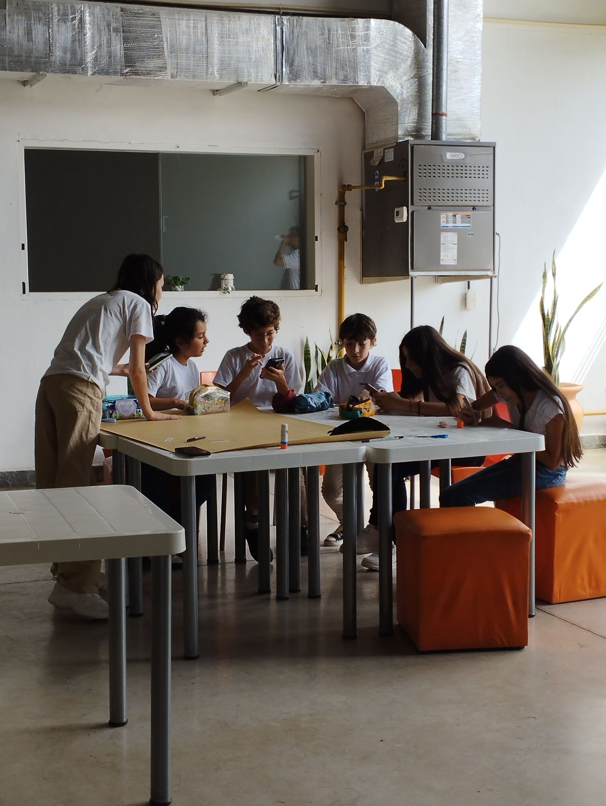
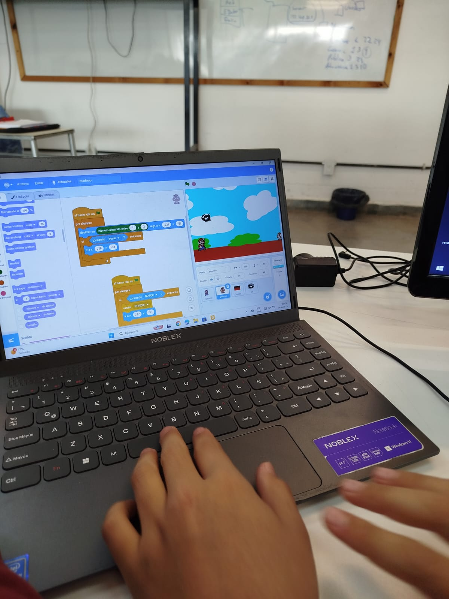
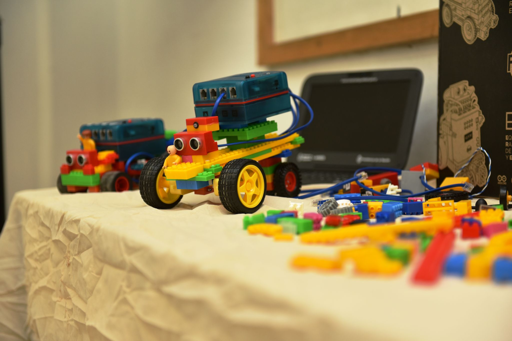

Tecnología con mirada humana. Una secundaria donde la programación, la robótica y la inteligencia artificial se encuentran con las artes, la literatura y las ciencias humanas.
La escuela secundaria representa una etapa clave en la vida de todo adolescente.
Las experiencias vividas en estos años dejan huellas profundas y duraderas.
Por eso, trabajamos con una propuesta educativa integral, que atiende no solo a los aspectos pedagógico-didácticos, sino también a las dimensiones culturales y psicosociales del aprendizaje.
Nuestra orientación se nutre de una mirada crítica, reflexiva y ética sobre la tecnología, explorando tanto sus posibilidades como sus desafíos.
El estudio de diversas áreas del conocimiento —artes, literatura, ciencias humanas— promueve una educación creativa y con visión de futuro.
Proyectos interdisciplinarios, salidas educativas, talleres y laboratorios convierten el aula en un espacio participativo donde se construye conocimiento.
Actualmente contamos con 1°, 2° y 3° año. A partir del ciclo lectivo 2027 abrimos 4° año. Agendá tu entrevista para las vacantes disponibles!
Cargá tus datos y los documentos requeridos en nuestro formulario de preinscripción.
Cargar formulario →Nos pondremos en contacto para acordar una entrevista con ambos tutores legales junto al estudiante.
DNI, partida de nacimiento, certificado de vacunación, ficha de inscripción firmada y constancia de libre deuda.
Desde administración te citarán para la firma del contrato y posterior pago de matrícula.
En caso de no haber vacantes disponibles, los postulantes que hayan finalizado el proceso podrán formar parte de una lista de espera.
Consultá por WhatsAppFotos reales de nuestra comunidad educativa.








El día a día de nuestra comunidad educativa, en imágenes y videos.
Constitución 716, Barrio Centro
Atención: 8:00 a 12:30 / 17:00 a 21:00
Tejerina Norte 783, Barrio Villa Dalcar
Atención: Lun–Jue 19:00 a 22:00
